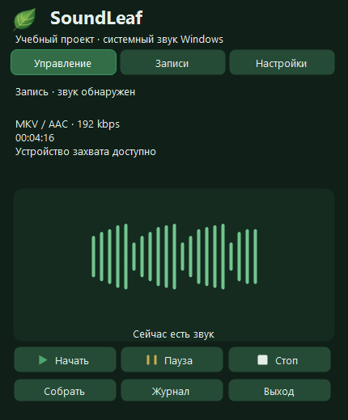
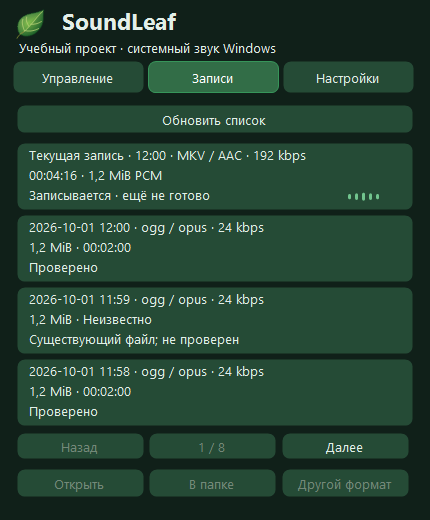

Системный звук
Записывайте звук приложений, браузера, музыки и звонков, который воспроизводится в Windows.
Записывайте системный звук Windows
локально, с управлением из трея.
Запись устройства вывода Windows по умолчанию. Управление, пауза и сохранение — в компактной панели. Микрофон не записывается.


Записывайте звук приложений, браузера, музыки и звонков, который воспроизводится в Windows.
Записи сохраняются на вашем компьютере. Резервный WAV помогает сохранить звук при сбое кодирования.
Завершённые записи показываются с форматом, размером и известной длительностью. Файл или папку можно открыть из интерфейса.
MKV/AAC, OGG/Opus, MP3, M4A/AAC, AAC/ADTS и отдельный режим записи только в WAV.


Библиотека загружается в фоне и показывает новые записи первыми. Для завершённых файлов отображаются размер, формат и доступная информация о длительности.
Поддерживаемые форматы SoundLeaf. Формат и папку сохранения можно менять только когда запись остановлена.
После остановки SoundLeaf проверяет результат перед тем, как считать его готовым.
Во время записи поддерживается резервный PCM/WAV-путь. Финальный файл публикуется только после завершения кодирования, декодирования для проверки и проверки длительности.
SoundLeaf умеет обнаруживать незавершённые сессии и восстанавливать их из проверенных WAV-частей. Исходные материалы архивируются только после успешного результата.
Автономный Setup без прав администратора. FFmpeg включён. Приложение не подписано.
Учебный проект для Windows 11 x64. Установка не запускает запись. При запуске приложения запись начинается автоматически после проверок. Перед использованием учитывайте права на записываемый контент и необходимое согласие участников.